The .zip file attached to the puzzle contained a complete playable—but slightly altered—shareware version of the classic id Software game Wolfenstein 3D. It’s been rethemed to give it a “Producers” feel. You can play the game on an original IBM PC, if you happen to have one around, or using “DOSBox” or “dosemu” on a modern operating system. You can also use the Wolf4SDL port to run these files.
There are ten saved game files included in the ZIP. Each one has a funny Producers-related name, and starts you off on a different level of the game, 1-10 in order. (The “secret level” is level 10.) For mercy’s sake, you’re on “Bring ’em on” difficulty, not “I am Death Incarnate!” The saved game file has been hacked to contain slightly different content from the usual level. Your starting position is almost the same as the usual starting position for the level, but you are turned to face a wall. On that wall is a poster of some kind. There is exactly one other wall matching this one on the level—and it marks one of the secret rooms in the game. Pushing on the poster will open the room, and in the room is a specific number of treasures. (To reduce potential red herrings, all treasures in the game have been changed to crosses.)
Note that these modifications are made only in the saved game. If you look for the poster by the starting position in a normal game, you won’t see find it there, which should clue you in. So you can’t go back and select “Can I play, Daddy?” difficulty, you need to play the level on the difficulty level it was saved at. On the other hand, I recommend figuring out how to turn on “God Mode,” which really does make the whole thing a lot easier (and more fun).
The name of the saved game file, location of each secret door, and the number of crosses found in the secret room so marked are as follows: (Note that these maps are of the unmodified game; they show enemies not present in “Bring ’em on” difficulty level and the original, not modified, number of treasures in each secret room.)
| Location of secret door | Secret Door Marker | Number of Crosses | Name of saved game |
|---|---|---|---|
| 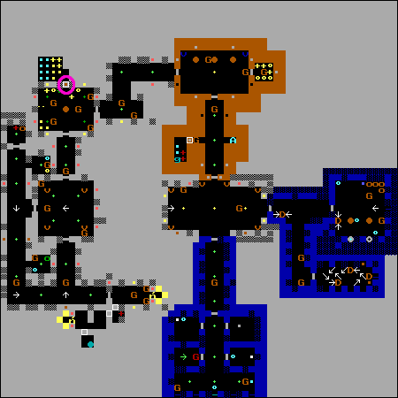 | 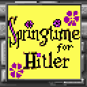 | 14 | Step1:FindThePlay! |
| 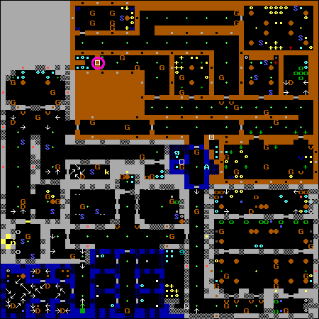 | 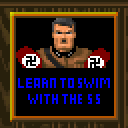 | 7 | Step2:GayKeepItGay |
| 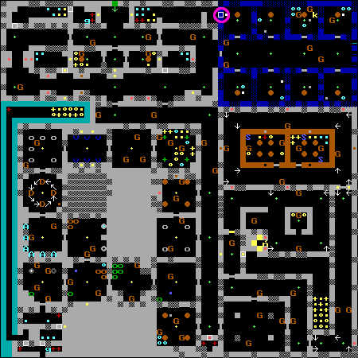 | 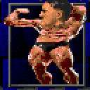 | 5 | Step3:RaiseMoMoney |
| 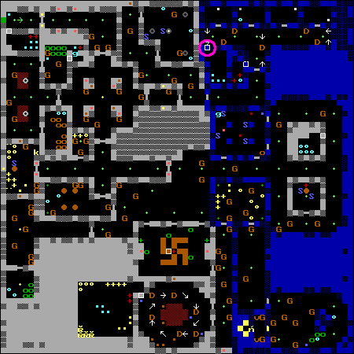 | 15 | Step4:Fated2BM8ted | |
| 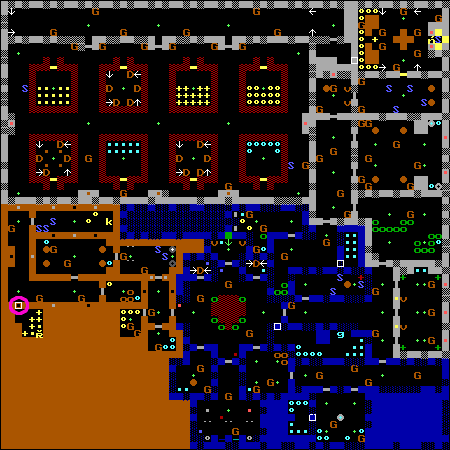 | 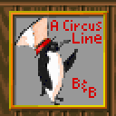 | 9 | WellUllaWakeUp@5AM |
| 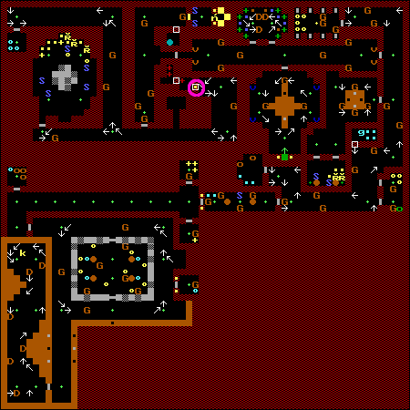 | 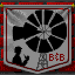 | 2 | To7am,UllaExercise |
| 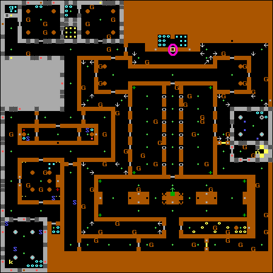 | 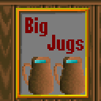 | 18 | 7until8,LongShower |
| 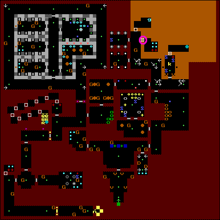 | 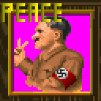 | 6 | @9SwedishBreakfast |
| 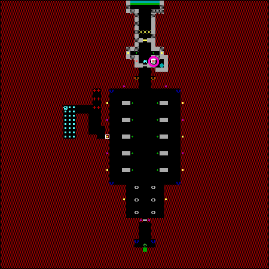 | 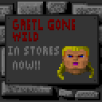 | 2 | 9211UllaSing&Dance |
| 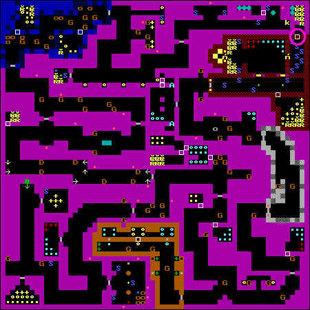 | 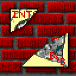 | 7 | 11Ulla69.WhenCome? |
Indexing into the name of the saved game file by the number of treasures found in the room gives the phrase, “PG38WORD26”. On the main menu of Wolfenstein is a promenient “Read This!” entry. Each “page” in this readme is marked; the 38th such page looks like this:
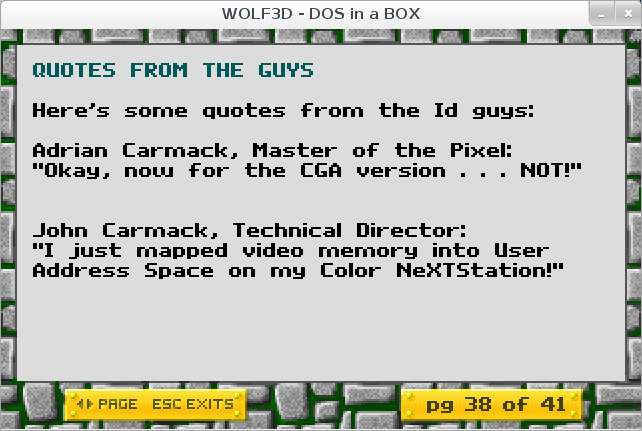
The 26th word on this page is the last name of John Carmack, co-founder of id Software and lead programmer for this game. Thus the answer to this puzzle is CARMACK.
(Thanks to: Michael Collin, whose Wolfenstein mods (“Castle Hasselhoff”, “Nazis With Attitude”, “Hitler’s Ark”, “Nazi PANIC!”) were a source of inspiration (and some wall textures), and The Wolf 3D Dome, which taught me everything I know about modding Wolfenstein.)
{kind=link}
{kind=link}
{kind=link}
{kind=link}
{kind=link}
{kind=link}
{kind=link}
{kind=link}
{kind=link}
{kind=link}